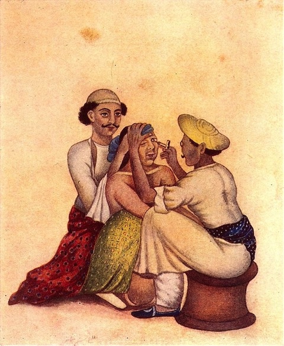

Important History in Ophthalmology
·
Gullstrand was the first ophthalmologist to
win the nobel prize.
· Prof. Endre Balatz: first coined the term ViscoSurgery
· Davis and Mandel proposed peribulbar injections in 1986
· Smith published a work on subconjunctival injections in 1990
· sub-Tenon approach by a plastic cannula was proposed by Greenbaum
· Fichman performed a series of phacoemulsifications under topical anaesthesia using 0.5% tetracaine
· Autologus Serum: first evaluated by Fox, 1984
Tsubota repopularised it.
· Mark S. Andrew, MD and Mylina Lincoln-Andrew, MS, developed the proprietary technology known as phaser-liquefaction as a new surgical approach toward tissue removal (ie, diseased dental tissue, liposuction). The Andrews granted a license to Alcon, Inc (Fort Worth, Tex) to develop ophthalmic products based on this technology. Using the phaser-liquefaction technique developed by the Andrews, Alcon has produced the AquaLase, which uses high-velocity, high-energy pulses of warmed balanced salt solution (BSS) to break up the lens and facilitate removal by aspiration of the lens fragments at the same time.
· Traditional phacoemulsification was first introduced by Charles Kelman in 1968.
· In 2001, WhiteStar Hyperpulse Technology was introduced by Advanced Medical Optics (Santa Ana, Calif ). This technology utilizes extremely short phaco pulses of 4 ms in length to minimize heat buildup during ultrasound. The thermal safety of the hyperpulse technology was shown in cadaver eye experiments done by Dr. Randall Olson.
Also, in 2001, Alcon, Inc
introduced a sonic oscillatory technology called NeoSoniX that further increased the effectiveness of lens nuclear
removal. This oscillatory motion moves lens nuclear material on the phaco tip
and increases the surface area of contact between the tip and the lens
material. NeoSoniX allows for a reduction in the total ultrasound power that is
needed to remove nuclear material of varying densities.
Torsional phacoemulsification is a
new ultrasonic technology from Alcon that has evolved from NeoSoniX. This
technology was first introduced at the 2005 American Academy of Ophthalmology
meeting as the OZil handpiece on the
INFINITI Vision System (Alcon, Inc). Torsional phaco works by utilizing a
side-to-side motion (32,000 times per second) at the tip of a curved or angulated
phaco needle.
· The combination of less movement and reduced frequency results in a two-thirds reduction of thermal risk for torsional phaco versus traditional phaco at the same power modulation. Dr. Richard Mackool demonstrated this in the following experiment. Using a thermal imaging camera, he looked at heat generated at a closed wound with no aspiration flow using traditional ultrasound compared to torsional ultrasound.
· Helmholtz is recognized today as the inventor of the direct ophthalmoscope. Perhaps the first ophthalmoscope was invented by Charles Babbage in 1849.
Hermann von Helmholtz had five
major accomplishments relating to ophthalmology, i.e. invention of an
ophthalmoscope (1850), confirmation of the Thomas Young theory of color vision
(1852), elucidation of the mechanism of accommodation (1854) and development of
an ophthalmometer (1854). Ophthalmometer was the first device to measure
corneal curvature accurately. Although, his ophthalmometer was a research
tools, later modifications led to clinically useful models like keratometer.
·
Doctor Danielle Avon Rosa first demonstrated
that Nd: YAG laser posterior capsulotomy
was a safe and effective therapy for the treatment of PCO
· Use of intraocular gas for RD was reported as early as 1911 by Ohm.
· Rosengren founded the concept of internal tamponade by air.
· Machemer recognized value of tamponade with expansile and longer persistence gases than air.
· Hilton popularised the procedure of Pneumatic retinopexy.
· Paul Cibis introduced liquid silicone oil for use in RD surgeries.
· The entity of retinal detachment was recognized early in the eighteenth century by de Saint-Yves, who reported the gross pathologic examination of an eye with a detached retina. The first clinical description did not appear until almost a century later, in 1817, when Beer detected a retinal detachment without the benefit of an ophthalmoscope.
· Girard-Teulon invented the reflecting binocular indirect ophthalmoscope in 1861. This potentially important contribution was generally overlooked by the profession, and more than 80 years transpired before Schepens developed the selfilluminating binocular indirect ophthalmoscope.
· In 1869 Iwanoff described the entity of posterior vitreous detachment.
· Scleral buckling was first described in 1937 by Jess, but this brief mention in the literature was overlooked until Custodius developed the procedure 12 years later.
· Although Bietti reported the use of cryosurgery for retinal detachment in 1933, it was Lincoff who developed and popularized this valuable method in 1964.
· In 1956 Meyer-Schwickerath introduced xenon arc photocoagulation to achieve a chorioretinal adhesion.
· PNEUMATIC RETINOPEXY, First performed by Ohm in 1911, the use of intravitreal air injection for retinal detachment was developed by Rosengren in 1938.
In 1985 Hilton and
Grizzard published the fi rst report using the procedure they named, pneumatic
retinopexy.
· The technique of scleral indentation was originally suggested by Trantas in 1900, who while examining with the direct ophthalmoscope pressed the globe with his fingernail. The thimble depressor of Schepen’s permits easy and accurate depression.
· In 1916, ALBERT EINSTEIN laid the foundation for invention of laser and its predecessor, the MASER.
· The first working laser in ophthalmology was made by THEODORE.H MAIMAN, in 1960.
· Harold Ridley, a British ophthalmologist, performed the first IOL implantation on November 29, 1949.
· Traquair described VF as an- “Island of vision in a sea of blindness”
· Worth in 1903 classified the binocular vision in three grades and devised the four dot test. Maddox emphasized the treatment of abnormal retinal correspondence and Mary Maddox was first to organize the orthoptic clinic in London.
· Bangerter (1946) coined the term pleoptics which included all treatment of amblyopia by whatever method, including conventional, collision.
· Cuppers (1956, 1961) in his approach to treat eccentric fixation, attempted to reestablish, at least temporarily, the physiologic superiority of the fovea over retinal periphery with a modified ophthalmoscope (Euthyscope), fovea is protected with a black mask, retinal periphery including the area used for eccentric fixation is dazzled with bright light.
· A clinical instrument for the measurement of aniseikonia was essentially a haploscope and is original eikonometer of Amas.
· Cuppers devised a more refined system by designing the visuscope, an ophthalmoscope that projects a small star as a fixation object onto the retina. Its position on the retina indicates the area patient uses for fixation.
· In 1980, R. H. Webb et al in Boston, USA, created a laser light source device to illuminate the fundus and produce an image of it on a television monitor---Flying Spot TV ophthalmoscope. It provided a higher quality image using less than 1/1000 of the light necessary to illuminate the fundus with conventional light ophthalmoscopy. It was later termed as scanning laser ophthalmoscope (SLO).
· Von Graefe 1856 did first iridectomy in staphylomatous eye, which decreased the ocular pressure for acute inflammatory glaucoma.
· The present term open angle and closed angle glaucoma was adopted by a symposium organized by the Council of International Organization of Medical Services.
· Foldable IOL was invented by Tom Mozzoco.
· first external dacryo-cystorhinostomy described by Toti.
· Dr. Charles Pavlin, Prof. Stuart and Prof. Foster developed UBM at the Princess Margaret Hospital at Toronto, Canada in 1989.
· The pioneer in the management of diabetic retinopathy is MeyerSchwickerath. who developed the Xenon photocoagulator, although treatment ot diabetic retinopathy was not his initial goal.
Rangaswamy
Srinivasan: In 1981, Srinivasan discovered that an ultraviolet excimer laser
can be used to etch a living tissue precisely without causing any thermal
damage to surrounding area. He named it Ablative Photodecomposition (APD).
In 2000 First LASIK procedures performed Dr.'s
David Schanzlin, Ron Kurtz, lmola Ratkay-Traub (Budapest)
In 2000 First ICRS (INTACS) procedures performed
Dr.'s David Schanzlin, Ron Kurtz, lmola Ratkay-Traub (Budapest)
ALISO VIEJO, Calif.- The first patients in the
United States have undergone cataract surgery using a femtosecond laser to cut
the flap, according to LenSx Lasers.
·
corneal collagen cross-linking (CXL) using
riboflavin (vitamin B2) and UVA: First described in 2003 by Wollensak et al
Marshall Miller Parks
(1918 - 2005 ) American paediatric ophthalmologist.
|
Marshall Miller Parks
(1918 - 2005 ) American paediatric
ophthalmologist.
• Parks is widely regarded as the father of paediatric ophthalmology. • Medical degree in St. Louis Medical School • Served in the American Navy during World War II. After the war, he started Ophthalmic residency at the Illinois’ Great Lakes Naval Hospital. • His studies into amblyopia and strabismus earned him world-wide reputation. • He later practiced in the Children's Hospital in Washington, D.C and offered paediatric ophthalmology as a subspecialty. • He is known for the Parks 3-step test. Which is designed to identify a paretic,vertically acting muscle by noting the eye with the hyperdeviation in the primary position, horizontal gazes and on forced head tilt to the right and the left. |
Sir Stewart Duke-Elder |
Sir Stewart Duke-Elder, a Scot, was a dominant force in British and international ophthalmology for more than a quarter of a century. He is best remembered as a talented and prolific writer and editor, producing seven volumes of Textbook of Ophthalmology and fifteen volumes of System of Ophthalmology, along with many other textbooks and scientific papers that provided the educational foundation for most of the world’s ophthalmologists. This monumental contribution to medical literature earned him the title of Fellow of the Royal Society in England. In addition to his own writings, Duke-Elder served for many years as editor of British Journal of Ophthalmology and Ophthalmic Literature and he was instrumental in the formation and research direction of the Institute of Ophthalmology in London. He was knighted in 1933 and subsequently earned many more honors, serving as the Surgeon-Oculist to King Edward VIII, George V and the present Queen Elizabeth. |
Sir Harold Ridley
|
During World War II, Sir
Harold Ridley observed that aviators could tolerate shards of PMMA
aircraft canopies in their eyes. He used this knowledge to create and implant the first intraocular lens in a
two-step procedure between 1949 and 1950. Three years later, he supervised
the first IOL implantation in the U.S. and later served as the first
president of the International Intra-Ocular Implant Club. Ridley’s cure for
aphakia, once ridiculed by his peers, is now a routine part of cataract
surgery. In addition to being the father of the intraocular lens, Ridley has
also made important contributions to tropical medicine. He was made a Fellow
of the Royal Society in England in 1986 for his contributions to science and
is now retired in Salisbury, England.
|
Charles Schepens
|
The impact of Charles
Schepens’ contributions is immense.... His strategy broadened and
deepened the knowledge of the retina to a point that it became a subspecialty
of its own. Because of his remarkable leadership he is revered as ‘The
Father of Modern Retina Surgery.’ Born in Belgium, he served in the
Belgian Air Force and the French Resistance during World War II. He was
captured twice by the Gestapo, but survived to emigrate to the U.S. in 1947.
Shortly thereafter, he established the Retina Foundation, now known as the Harvard-affiliated Schepens Eye Research
Institute. It is the largest independent eye research organization in the
U.S., a living legacy to the basic biomedical and clinical eye research
Schepens thought so important. He invented the indirect binocular ophthalmoscope, which is now routinely used to
view the retina. His devices and surgical techniques such as scleral buckling have been credited
with raising the success rate of retinal reattachment surgery from 40% to
90%. Before his death in 2006, Schepens was a professor emeritus of Harvard
University. He was the founder of Retina Associates in Boston, where he
continued to practice until his death.
|
José Barraquer
|
José Barraquer,
who came from a family that boasts four generations of prominent
ophthalmologists, is widely acknowledged to be the father of refractive surgery. He was born in Spain, but moved in
1953 to Bogota, Colombia. There, he founded the Barraquer Institute of America, where he trained many of the
refractive surgeons practicing around the world today. Barraquer promoted the
improvement of suture material and technique in cataract and corneal surgery,
and designed numerous surgical instruments, many of which still carry his
name. But his life’s work was dedicated to the idea of reshaping the cornea
to change the eye’s refractive power. Toward this end, he designed the cryolathe and the microkeratome and
developed keratomileusis and keratophakia, laying the groundwork for
LASIK and other modern lamellar procedures. Barraquer continued to practice,
invent and teach until his death last year.
|
Edward Maumenee
|
Edward Maumenee,
the son of an ophthalmologist from Mobile, Alabama, said once he wanted to
become the best ophthalmologist in the world, and many believe he achieved
that goal. In addition to being an extremely highly regarded cataract and
corneal transplant surgeon, he also classified
disorders of the macula, discovered an important immune response in the
rejection of corneal tissue, and made pioneering contributions to the
understanding and treatment of retinal
malfunctions and glaucoma. Maumenee served as director of the Wilmer Eye Institute at Johns Hopkins
Hospital from 1955–1979 and was director emeritus until he died last
year. He was instrumental in focusing national attention on the problem of
blindness, in the formation of a national
eye-banking system, and in the 1968 creation of the National Eye
Institute at the National Institutes of Health. His role in the development
of clinical and basic science in ophthalmology is of lasting importance.
|
Ramon Castroviejo
|
Ramon Castroviejo,
the son of a Spanish ophthalmologist, came to the United States as a young
man to do a fellowship at the
Mayo Clinic. He stayed on at New York’s Columbia Presbyterian Medical Center, where he performed the world’s first successful human cornea transplant. Creating a rectangular rather than circular “window” in the cornea was the secret to his successful transplants. Although the medical community was slow to recognize his successes, Castroviejo was eventually lauded for his sight-saving corneal tissue transplant techniques, which he continued to refine and teach for many years. Castroviejo also promoted the donation of corneal tissue in the United States and designed numerous ophthalmic instruments. |
Lorenz Zimmerman
|
Born to German and Swiss immigrant parents in
Washington, D.C., in 1920, Lorenz Zimmerman
received his medical degree from George Washington University. His residency
training at Walter Reed Army Hospital was interrupted by the Korean War, during
which he commanded a mobile medical laboratory in Korea. Returning after the
war to the Armed Forces Institute of Pathology, he pursued his first love, ophthalmic pathology, chairing the
department for 29 years. As chairman, he developed training programs and
encouraged young ophthalmologists to go into pathology. Zimmerman filled a
void in ophthalmology and in so doing, greatly improved the understanding of
eye disease. He continues to teach in the Washington area.
|
Donald Gass
|
Donald Gass
came to the field of medicine almost by accident, but his contributions to
ophthalmology have been vast. After receiving his medical degree from Vanderbilt University in 1957 and
completing residencies in ophthalmology at the Wilmer Eye Institute, Johns
Hopkins Hospital, Gass became very excited about combining his interest in
pathology with new techniques for viewing the fundus with the fundus camera
and fluorescein angiography. He is well known for his research on diseases of the retina, macula and uvea,
much of which was done in Miami. Gass continues to practice and is professor
of ophthalmology at both the University of Miami School of Medicine and
Vanderbilt University in Nashville.
|
Jan Evangelista Purkinje:
(1787-1869)
Purkinje is a known to all ophthalmologists for Purkinje's cells, Purkinje's images. Jan Evangelista Purkinje was a versatile scholar with wide-ranging interests and an exceptional capacity for innovative thinking. He used the name “Purkinje” until 1850, from whence he used the correct spelling, Pyrkyně. We use Purkinje for the eponyms because that is the more common. Purkinje was a Czech nationalist and had a major influence on Czech cultural life in the middle of the 19th century. He was a friend of the famous German poet Johann Wolfgang von Goethe, who wrote about Purkinje: “and should you fail to understand, let Purkyně give you a hand!” Purkinje published a Czech translation of Friedrich Schiller's poems, and translated works of William Shakespeare into Czech.
Purkinje created the world’s first department of physiology at the University of Breslau, Prussia in 1839 and the first official physiological laboratory, known as the Physiological Institute, in 1842. Purkinje used to believe that that experiments in one's own body ("in corpore nobili") gave more practical results than those in animal experiment ("in corpore vili") or in fatally ill patients. And when he was a medical student, Purkinje used to investigate the physiology of sight by experimenting on himself with a variety of drugs, including Belladonna. His interest in the physiology of light led him to make animated cartoons, and thus he became one of the earliest motion picture pioneers.
He is best known for his discovery of Purkinje cells, large nerve cells with many branching extensions found in the cortex of the cerebral cortex. He is also known for his discovery of Purkinje fibers, the fibrous tissue that conducts the pacemaker stimulus along the inside walls of the ventricles to all parts of the heart. It was Purkinje, who introduced the scientific terms plasma. An early user of the improved compound microscope, he discovered the sweat glands of the skin, germinal vesicles. He recognized fingerprints as a means of identification and noted the protein-digesting power of pancreatic extracts. He died on July 25 of 1868.
Friedrich
Gustav Jacob Henle (1809 -1885)
Friedrich Gustav Jacob Henle, who is known to us for Henle’s layer, Hassle-Henle bodies, loop of Henle, was a German anatomist and pathologist. He was a man of wide interests, equally at home with the arts as with science. He was a fine musician, playing the violin, viola and violin cello. In his young age, Henle thought of becoming a minister. His political ideas were liberal and nationalistic. But in1835 Henle was arrested and detained in Berlin & was released from confinement after four weeks.
He wrote Handbuch der rationellen Pathologie (Handbook of Rational Pathology), Allgemeine Anatomie (General Anatomy), which is the first systematic work on histology. Henle published the first descriptions of the structure and distribution of human epithelial tissue and of the fine structures of the eye and brain. Along with Gabriel Valentin, Henle was among the first authors to use the term “cell”.
During his stay in Zurich he fell
in love with Elise Egloff, who worked as a governess in the house of his
friend. He set her up in her own lodgings and later arranged for his sister to
educate her and give her social polish. They were married in March 1846. One
son and one daughter resulted from this union, which ended barely two years
later with his wife’s death from tuberculosis. In August 1849, Henle married
Marie Richter, the daughter of a Prussian officer; they had four daughters and
one son. Henle was very sociable. He loved witty conversations, encouraged home
musicals and evening gatherings for reading, and was happy to open his house
for concerts. He died of renal and
spinal sarcoma on13th May in 1885.
Hermann von
Helmholtz (1821- 1894)
Hermann Ludwig Ferdinand von Helmholtz was a German physician and physicist. In the words of the 1911 Britannica, "his life from first to last was one of devotion to science, and he must be accounted, on intellectual grounds, as one of the foremost men of the 19th century."
As a young man, Helmholtz was interested in natural science especially mathematics, but his father wanted him to study medicine because there was financial support for medical students.
His investigations occupied almost
the whole field of science,
including physiology, physiological optics, physiological acoustics, chemistry,
mathematics, electricity and magnetism, meteorology and theoretical mechanics. In
physiology and physiological psychology, he is known for his mathematics of the eye, theories of vision,
ideas on the visual perception of space, color vision research, and on the
sensation of tone, perception of sound, and empiricism. In physics, he is
known for his theories on the conservation of force, work in electrodynamics,
chemical thermodynamics, and on a mechanical foundation of thermodynamics. As a
philosopher, he his known for his philosophy of science, ideas on the relation
between the laws of perception and the laws of nature, the science of
aesthetics, and ideas on the civilizing power of science. Albert Einstein once
said “I admire the original, free mind
of Helmholtz”
Helmholtz revolutionized the ophthalmology with the invention of the ophthalmoscope. It arose from an attempt in 1850, to demonstrate to his class the nature of the glow of reflected light sometimes seen in the eyes of animals such as the cat. Helmholtz first disclosed about his discovery to his father. In a letter to his father in 17th December, 1950 he wrote “I have make a discovery during my lectures on the Physiology of the Sense-organs, which may be of the utmost importance in ophthalmology”. When the famous ophthalmologist, von Gräfe, first observed the fundus of the living human eye, with its optic disc and blood-vessels, his face flushed with excitement, and he shouted, "Helmholtz has unfolded to us a new world!"
Douglas Moray
Cooper Lamb Argyll Robertson (1837-1909)
Argyll Robertson was a scottish ophthalmologist described the pupil found in tabes dorsalis. He was the disciples of the famous ophthalmologist of Albrecht von Graefe.
Calabar bean (Physostigma venenosum) is the
seed of a leguminouis plant found in Calabar, in the eastern region of Nigeria.
In those days, a solution of the seed extract was used by the natives for judicial execution – if the man vomited
it back then he was considered innocent. Argyll Robertson instilled an extract
of calabar bean into his own eye and made the deduction that physostigmine contracts
the pupil. He predicted it would become “an agent that will soon rank as one of the
most valuable in the ophthalmic pharmacopoeia”. The same year, his
teacher von Graefe utilized its miotic effect to facilitate iridectomy.
Argyll Robertson was a man of broad medical interests, always emphasizing the role of ophthalmology in a wider medical context. But he left no large number of medical publications; according to his obituary he "preferred the tongue to the pen as a medium". In 1908, he made a journey to India. He caught a cold in Gondal near Bombay, and died there.
- compiled & published by Dr Dhaval Patel MD AIIMS